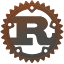
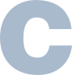

Hi, my name is Simon, I'm 15 years old and from Berlin, Germany.
My by far most used programming language is python but I'm planning to either learn

or
.
Below, you can see a list that shows most of my projects. It also shows how much time I've spent on each one of them.
You can click here to visit my GitHub profile.
I use Arch btw.